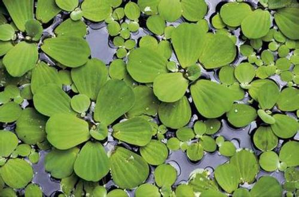

能在水中生长的植物，统称为水生植物。水生植物是出色的游泳运动员或潜水者。叶子柔软而透明，有的形成为丝状，如鱼藻。丝状叶可以大大增加与水的光照，吸收水里溶解得很少的二氧化碳，保证光合作用的进行。能在水中生长的植物，统称为水生植物。水生植物是出色的游泳运动员或潜水者。叶子柔软而透明，有的形成为丝状，如鱼藻。丝状叶可以大大增加与水的光照，吸收水里溶解得很少的二氧化碳，保证光合作用的进行。

多肉植物（succulent plant）是指植物营养器官肥大、具有蓄水薄壁组织的高等植物，又称多浆植物或多肉花卉，但以多肉植物这个名称最为常用。据粗略统计，全世界共有多肉植物一万余种，在分类上隶属100余科。多肉植物（succulent plant）是指植物营养器官肥大、具有蓄水薄壁组织的高等植物，又称多浆植物或多肉花卉，但以多肉植物这个名称最为常用。据粗略统计，全世界共有多肉植物一万余种，在分类上隶属100余科。